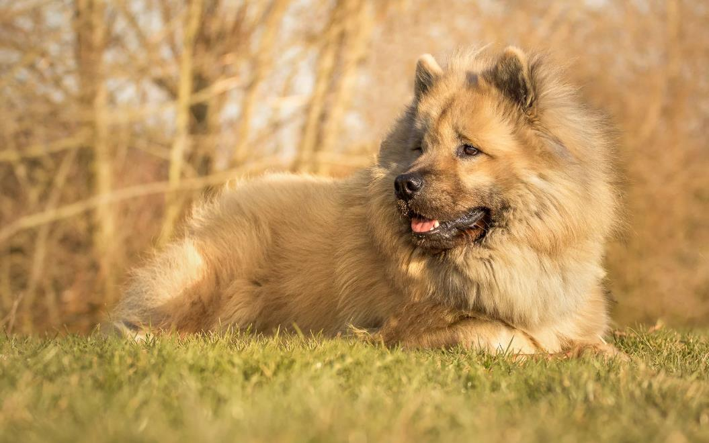

Азиатский шпиц, выведенный в 60-70-е годы 20-го века. За основу были взяты Вольшпиц и Чау-чау рыжего и черного окрасов. Позже в процессе селекции была примешана кровь Самоедской лайки. Селекционеры хотели получить идеальную преданную собаку с хорошими рабочими качествами, но добродушную и к знакомым людям, и к посторонним.

Выведена порода в Германии, но относится к японским из-за большой примеси внешности и генов Чау-чау.
Собака среднего размера, вырастает до 60 см, легко уживается в городской квартире. По формату корпуса – квадратная, коренастая и мускулистая. Конечности умеренно длинные, морда средней длины, прямая, зауженная к носу. Шерсть прямая, жесткая, длинная. Допускаются окрасы: черный, красный, рыжий, серый; цвета вариативны, допускаются подпалы.
Порода предназначена исключительно для семейной жизни в роли компаньона. Она слишком дружелюбная для того, чтобы быть охранником, но обладает неплохими физическими данными. Поэтому Евразиеры часто участвуют в собачьих видах спорта. Животные спокойные, преданные, ласковые, неагрессивные, тихие. Ладит и с детьми, и с питомцами.